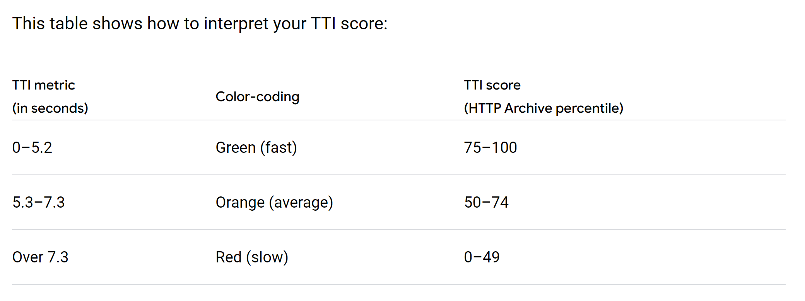
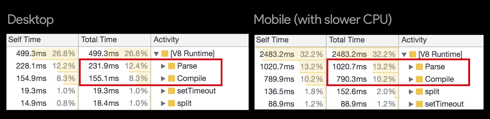
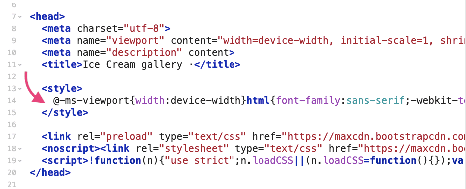
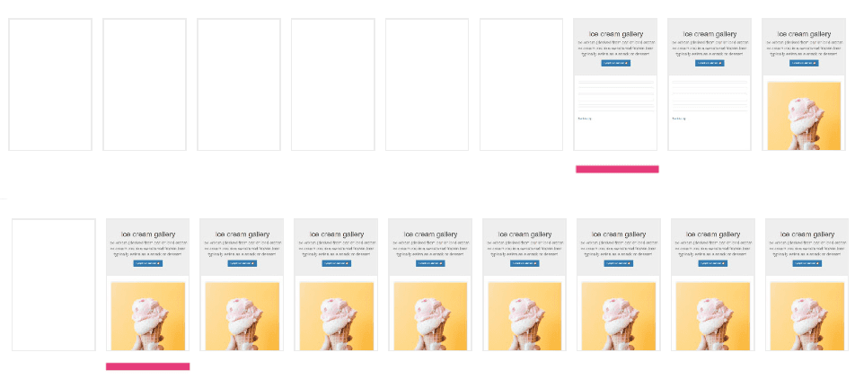

Въведение
С навлизането на модерните уеб технологии и стремежа ни да накараме приложенията ни да правят повече, често срещаме проблеми с производеителността. Днешните сайтове имат повече функционалности от всякога. Всичката тази функционалност обаче идва с цена - в най-добрия случай потребителите ни ще трябва да изяакат малко повече докато могат да използват продукта ни. В най-лошия случай обаче те правят нашия сайт напълно неизползваем или нереагиращ на действията на протребителя.
Защо производителността е важна?
Потребителите все повече използват на мобилни устройства за достъп до уеб съдържание и услуги. Това значи че ние трябва да оптимизираме нашите сайтове дори за не толкова мощните устройства, от които нашите потребители могат да достъпят сайта ни. Потребителите също са по-взискателни от всякога и когато използват нашия сайт го сравняват с не само с кункурентите ни, но и с най-добрите услуги които използват.
Оптимизирането на скоростта на вашия сайт може също така да го направи достъпен за потребители, които имат по-бавни мрежови връзки и не са имали достъп до него преди.
Що се отнася до потребителското изживяване, скоростта има значение. А забавянето, причинено от скоростта на мобилните устройства, не е само разочароващо, но може да има отрицателно въздействие и върху резултатите на бизнеса ни. Например, една секунда забавяне навремето за зареждане може да повлияе на процента на продажбите ни с до 20%.
 [1] Why does speed matter? https://web.dev/why-speed-matters/
[1] Why does speed matter? https://web.dev/why-speed-matters/
First Paint vs First Contentful Paint
First Paint измерва времето от навигацията до времето, когато в браузъра рендерира нещо (каквото и да е). Това може да е нещо малко и неинформативно като промяна в цвета на фона.
 [2] First Contentful Paint Explained:
https://gtmetrix.com/blog/first-contentful-paint-explained/
[2] First Contentful Paint Explained:
https://gtmetrix.com/blog/first-contentful-paint-explained/
Тази метрика не е особено полезна понеже това първо рендериране не носи никаква информация на потребителя и сърържанието на страницата още не е заредено.
First Contentful Paint (FCP) измерва времето от навигацията до времето, когато браузърът визуализира първата част от съдържанието от DOM дървото. Това е важен етап за потребителите, защото им дава част от съдържанието на страницата, което те могат да консумират. Също индикира, че сайтът ни наистина се зарежда.
 [2] First Contentful Paint Explained:
https://gtmetrix.com/blog/first-contentful-paint-explained/
[2] First Contentful Paint Explained:
https://gtmetrix.com/blog/first-contentful-paint-explained/
Largest Contentful Paint
Largest Contentful Paint (LCP) По-старите показатели като load или DOMContentLoaded не са добри, защото не винаги съответстват на преживяването, което потребителят вижда на екрана си. И по-новите, ориентирани към потребителите показатели за ефективност като First Contentful Paint (FCP) улавят само началото на зареждането. Ако страницата показва единствено индикатор за зареждане, този момент не е много важен за потребителя
Largest Contentful Paint (LCP) отчита времето за изобразяване на най-големия елемент, видим в екрана.
Към момента, типовете елементи, които са кандидати за най-голям елемент могат да са от следните типове:
- <img> елементи
- <image> елементи вътре в <svg> елемент
- <video> елементи (използва се обложката)
- Елемент с фоново изображение, заредено чрез url() функцията
- Блоков елемент, съдържащи текстови стойности или децата му са текстови елементи.
 [3] Largest Contentful Paint (LCP): https://web.dev/lcp/
[3] Largest Contentful Paint (LCP): https://web.dev/lcp/
Time to Interactive
Time to Interactive (TTI) Измерването на TTI е важно, тъй като някои сайтове оптимизират видимостта на съдържанието за сметка на интерактивността. Това може да създаде неприятно потребителско изживяване: изглежда, че сайтът е готов, но когато потребителят се опита да взаимодейства с него, нищо не се случва.
 [5] User-centric Performance Metrics:
https://developers.google.com/web/fundamentals/performance/user-centric-performance-metrics
[5] User-centric Performance Metrics:
https://developers.google.com/web/fundamentals/performance/user-centric-performance-metrics
TTI измерва колко време отнема дадена страница да стане напълно интерактивна. Страницата се счита за напълно интерактивна, когато:
- Страницата показва съществено съдържание, което се измерва с First Contentful Paint
- Event Handlers са закачени за повечето видими елементи на страницата
- Страницата отговаря на потребителски действия в рамките на 50 милисекунди.
Към какви стойности да се стремим?  [4] Time to Interactive: https://web.dev/interactive/
Намалете количеството Javascript с Code Splitting
Много приложения поставят всичките си скриптове в един файл и доставят голям пакет при първоначално зареждане. Този файл съдържа не само нужните ресурси за първоначалната страница, но и ресурсите за всички останали страници - независимо дали потребителят някога ще ги посети! Този подход "всичко или нищо" може да бъде неефективен. Всяка секунда, изразходвана за зареждане, анализиране и изпълнение на байтове неизползван код, удължава времето на приложението ви до интерактивност (TTI), което означава, че потребителите са принудени да чакат излишно преди да могат да го използват. Този проблем се усеща повече от потребителите на мобилни устройства, където по-бавните процесори или мрежовите връзки могат да наложат допълнителни закъснения. Фигурата по-долу показва колко по-дълъго може да отнемат анализа и компилиранете на мобилно устройство спрямо десктоп или лаптоп с по-мощен процесор:
 [7] Reduce JavaScript Payloads with Code Splitting: https://developers.google.com/web/fundamentals/performance/optimizing-javascript/code-splittingДефиниране на бюджети
Ако се отнасяте към оптимизирането на производителността като към еднократна задача, то подобренията в бързината на приложението ви ще останат настрана тъй като добавянето на нови функционалности и "технологичен дълг" ще заличи подобренията, които сте направили. Бюджетите за производителност ви помагат да запазите подобренията в дългосрочен план и да предотвратите добавянето на нови функции да убие ефективността на приложението ви.
Примерни бюджети могат да излгеждат по следния начин:
- Time-To-Interactive < 5 секунди с 3G мрежа на емулиран (или истински) мобилен телефон.
- Размер на JavaScript пакетите < 200 KB ако таргетираме мобилни платформи.
Разделяне според входни точки
Под входна точка ще разбираме файлът от където вашият build tool (например webpack) започва да анализира зависимостите на вашето приложение. Ако използваме аналогия с дърво, това е корена на дървото, от където ресурсите и пърищата на вашето приложение се разклоняват. Някои приложения могат да имат една входна точка, докато други може да имат много такива.
Кога този подход има смисъл: Ако разработвате сайт, който не Single Page Application (SPA). Т.е всяка различна страница от вашето приложение ще има стобствен JavaScript пакет с нужните за нея функционалности.
За какво да внимаваме: Ако входните точки използват едни и същи външни библиотеки или модули, може да се получи така че имаме дублициран код в различните скриптове. Това може да се адресира ако извадим споделените части в различен модул, който да се зарежда само веднъж.
Asset Size Chunks Chunk Names
js/commons.e039cc73.js 40 KiB 0 [emitted] commons
js/main.5b71b65c.js 7.82 KiB 2 [emitted] main
js/detail.b3ac6f73.js 5.17 KiB 3 [emitted] detail
js/favorites.8da9eb04.js 2.18 KiB 4 [emitted] favorites
js/runtime.2642dc2d.js 1.46 KiB 1 [emitted] runtime
index.html 1.08 KiB [emitted]
detail.html 1.08 KiB [emitted]
favorites.html 1.08 KiB [emitted]Динамично разделяне
Друг подход за разделяне на мързеливо зареждане на скриптове с динамични import() statement-и:
import("./myFancyModule.js").then(module => {
module.default(); // Call a module's default export
module.andAnotherThing(); // Call a module's named export
});const module = await import("./myFancyModule.js");
module.default(); // Access a module's default export
module.andAnotherThing(); // Access a module's named exportКога този подход има смисъл: Разработвате SPA приложение с множество дискретни функционалности, които не всички потребители биха използвали. Мързеливото зареждане на тези функционалности може да намали количеството ресурси, които се изпращат по мрежата, както и времето за анализиране и компилиране на JavaScript в браузъра.
За какво да внимаваме: Дунамичното зареждане на скриптове стартира мрежова заявка, което значи че потребителите могат да усетят забавяне по време на изпълнението. Това може да се преодолее чрез така нареченото "предварително извличане" (pre-fetching) на ресурсите, от кото потребителят може да се нуждае.
Премахнване на неизползван JavaScript
JavaScript е скъп ресурс за обработка. За разлика от изображения, които са тривиални за декодиране след като ги изтеглим, JavaScript трябва да бъде анализиран, компилиран и едва след това изпълнен. Това прави JavaScript много по-скъп от другите видове ресурси.
 [6] Reduce JavaScript Payloads with Tree Shaking:
https://developers.google.com/web/fundamentals/performance/optimizing-javascript/tree-shaking/
[6] Reduce JavaScript Payloads with Tree Shaking:
https://developers.google.com/web/fundamentals/performance/optimizing-javascript/tree-shaking/
Разделянето на кода е една тактика, която ни позволява да подобрим поизводителността чрез разделяне JavaScript кода ни на парчета и изпращането на тези парчета единствено, когато потребителят наистина се нуждае от тях. Тази техника работи, но не адресира често срещан проблем на приложенията с голямо количество JavaScript - изпращането на код, който никога не се използва. За да разрешим този проблем, разчитаме на Tree Shaking.
Какво е Tree Shaking?
Tree Shaking е метод за премахване на неизползван код. Терминът Tree Shaking идва от представянето на нашето приложение и зависимостите му в дървовидна структура. Нека представим възел в дървото представлява зависимост, която осигурява различна функционалност на приложението ни. В съвременните приложения тези зависимости се въвеждат чрез статични импорти както следва:
// Import all the array utilities!
import arrayUtils from "array-utils";В началото на нашия проект, докато още нямаме много зависимости, този подход работи добре, понеже най-вероятно използваме всичките библиотеки на които зависим. След като проектът ни се разрастне често се случва да променим зависимостите си или да сменим тяхната версия. Като резултат се оказва че много от нашите импорти са ненужни. За да можем да се възползваме от tree shaking, е нужно да използваме следния синтаксис за нашите статични импорти:
// Import only some of the utilities!
import { unique, implode, explode } from "array-utils";Разликата между този пример и предишния е че вместо да импортваме всичко от array-utils модула (който може да съръжра много неща), тук импортваме само частите които ни трябват. Това би позволило на нашият buld tool да "изтърси" тези експорти, кото не са експлицитно импортнати и по този начин да направи нашият пакетиран JavaScript по-малък.
Минифицирайте и компресирайте ресурсите по мрежата
Има две полезни техники, които могат да се използват за подобряване на работата на вашата уеб страница:
- Минифициране
- Компресиране на данните
Минифициране
Минифицирането е процесът на премахване на бялото пространство и всичкия ненужен код за създаване на по-малък, но напълно валиден файл. Terser е популярен инструмент за компресиране на JavaScript, а webpack v4 включва плъгин за тази библиотека по подразбиране, за да създаде минимизирани файлове.
- Ако използвате webpack v4 или по-нова версия, сте готови без допълнителна работа. 👍
- Ако използвате по-стара версия на webpack, инсталирайте и включете TerserWebpackPlugin в настройките на вашата конфигурация. Следвайте документацията, за да научите как.
- Ако не използвате пакет модул, използвайте Terser като инструмент на командния ред или го включете директно като зависимост към приложението си.
Компресиране
Компресирането на данни е процес, при които файловете се реформират в друг формат. Разликата с оригиналния файл е, че новият заема по-малко място (с други думи, той е компресиран). За да се осъществи този процес, се прилагат различни математически методи и алгоритми, чрез които се съпоставят различни кодове, махат се излишни знаци. Gzip е най-широко използвания формат за компресиране на данни при клиент-сървър комуникация. Brotli е по-нов алгоритъм за компресиране, който може да постигне дори по-добри резултати ор Gzip.
Компресирането на файлове може значително да подобри производителността на уеб страницата ни, но рядко ни се налага да праим това сами. Много хостинг платформи, CDN и прокси сървъри кодират ресурсите по подразбиране, или ви позволяват лесно да го конфигурирате. Прочетете документацията за инструмента, който използвате, за да видите дали компресията вече се поддържа, преди да се опитате да разработите собственото си решение.
Зареждайте некритичен css по-късно
CSS файловете са render-blocking ресурси: те трябва да бъдат заредени и обработени преди браузърът да рендерира страницата. Уеб страници, които съдържат ненужно голямо количество стилове отнемат по-дълъго да бъдат заредени.
С тази стратегия ще отложим зареждането на некритичния CSS с цел да оптимизираме критичната пътека на рендериране и да подобрим Първата съществена боя (FCP).
Как да разберем кои стилове не са критични?
За да можем да оценим кои стилове са напълно неодходими за правилното зареждане на страницата ни, и кои можем да отложим, насреща идва Chrome Dev Tools.
- В DevTools отворете командното меню, като натиснете Control + Shift + P или Command + Shift + P.
- Въведете "Coverage" и изберете Show Coverage.
- Щракнете върху бутона Reload, за да презаредите страницата и да започнете да измервате покритието.
След приключването на отчета, стиловете ви ще бъдат маркирани в два цвята:
- Зелено (критично): Това са класовете, на които браузърът трябва да представи видимото съдържание (като бутоните за заглавие, субтитри и акордеон).
- Червено (некритично): Тези стилове се прилагат за съдържание, което не се вижда веднага (като абзаците вътре в акордеоните).
Какво да правим със критичните стилове ще разберем в следващата точка, сега ще се фокусираме върху некритичните стилове. Тези, стилове които бяха маркирани с червено могат да бъдат заредени по-късно без да нарушат изгледа на нашата уеб страница. Потребителите няма да разберат че нещо липсва, но страницата ви ще се зареди по-бързо.
За да заредите некритичните си стилове с отлагане е нужно да отделите тези стилове в отделен css файл и да го реферирате в html документа по следния начин:
<link rel="preload" href="styles.css" as="style" onload="this.onload=null;this.rel='stylesheet'">
<noscript><link rel="stylesheet" href="styles.css"></noscript>Вградете критичния css в документа
В предната точка разгледахме начин да разделимстиловете си на критични и некритични и как да оптимизираме зареждането на некритичните си стилове. Сега ще разгледаме стратегия за оптимизиране на критичните стилове.
Ключов термин: Критичният CSS е техника, която извлича CSS за съдържание във видимата част на стрницата, за да предостави съдържание на потребителя възможно най-бързо.
 [10] Extract critical CSS: https://web.dev/extract-critical-css/
[10] Extract critical CSS: https://web.dev/extract-critical-css/
Above-the-fold е цялото съдържание, което потребителят вижда при зареждане на страницата, преди да scroll-ва. Няма универсално определена височина на пикселите на това, което се счита за критично съдържание, тъй като има безброй устройства и размери на екрана.
Вграждането на тези стилове в <head> тага на HTML документа премахва нуждата от допълнителна заявка за да се извлекат. Останалите стилове могат да се заредят асинхронно както беше показано.
 [10] Extract critical CSS: https://web.dev/extract-critical-css/Тази стратегия може да доведе до значителна разлика на възприетата производителност, особено при лоши мрежови условя. Зс мобилните мрежи високата латентност е проблем, независимо от bandwidth-a.
 [10] Extract critical CSS: https://web.dev/extract-critical-css/Източници
- [0] Fast load times: https://web.dev/fast/
- [1] Why does speed matter?: https://web.dev/why-speed-matters/
- [2] First Contentful Paint Explained: https://gtmetrix.com/blog/first-contentful-paint-explained/
- [3] Largest Contentful Paint (LCP): https://web.dev/lcp/
- [4] Time to Interactive: https://web.dev/interactive/
- [5] User-centric Performance Metrics: https://developers.google.com/web/fundamentals/performance/user-centric-performance-metrics
- [6] Reduce JavaScript Payloads with Tree Shaking: https://developers.google.com/web/fundamentals/performance/optimizing-javascript/tree-shaking/
- [7] Reduce JavaScript Payloads with Code Splitting: https://developers.google.com/web/fundamentals/performance/optimizing-javascript/code-splitting
- [8] Minify and compress network payloads: https://web.dev/reduce-network-payloads-using-text-compression/
- [9] Defer non-critical CSS: https://web.dev/defer-non-critical-css/
- [10] Extract critical CSS: https://web.dev/extract-critical-css/